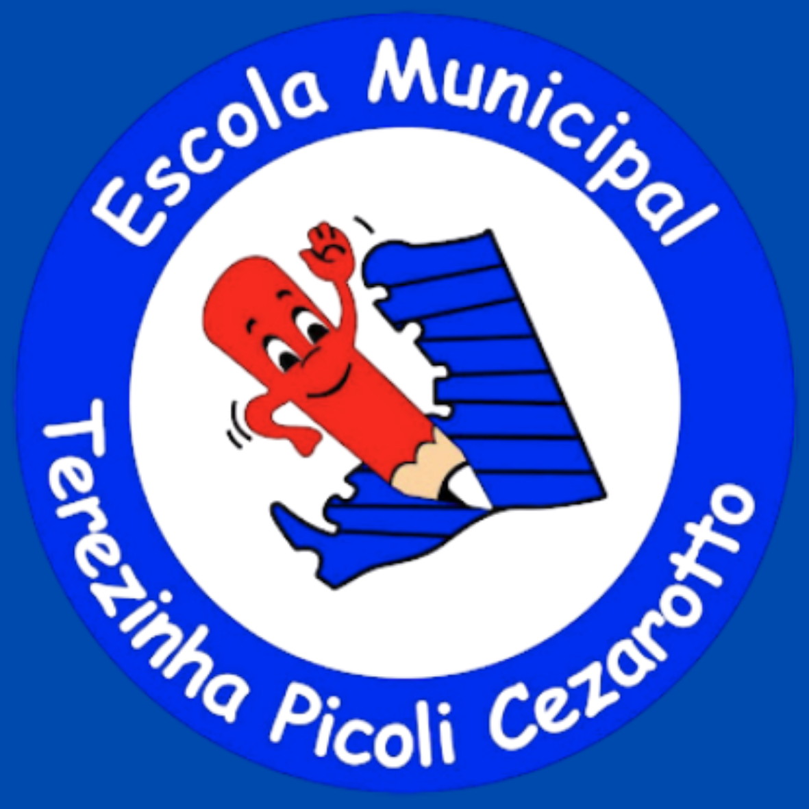

Projeto inovador que ensina conceitos de tecnologia e sustentabilidade através da construção de robôs com materiais recicláveis e de baixo custo.
Plataforma gamificada de Matemática com atividades alinhadas à BNCC. Estimula o raciocínio lógico com desafios divertidos e trilhas personalizadas.
Projeto onde os estudantes escrevem e publicam seus próprios livros, incentivando a leitura e a criatividade.
Formação em inovação educacional com projetos mão na massa, tecnologia de baixo custo e cultura maker.
Estimula a leitura e criatividade dos alunos, envolvendo a comunidade escolar em atividades literárias e apresentações teatrais.